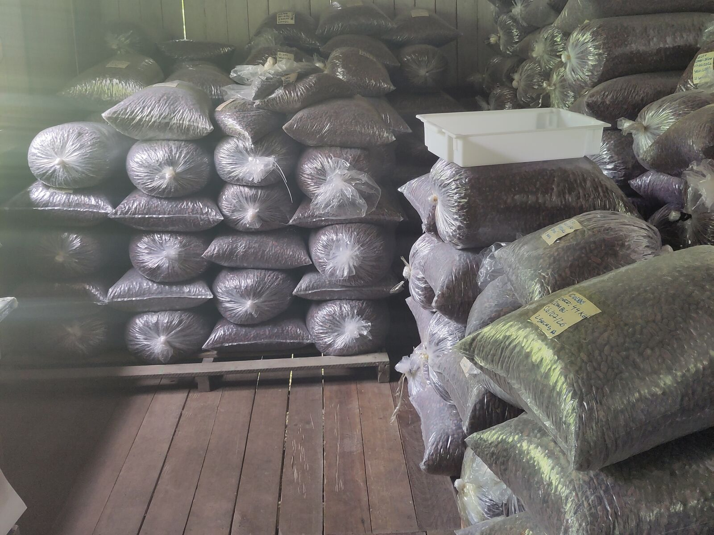
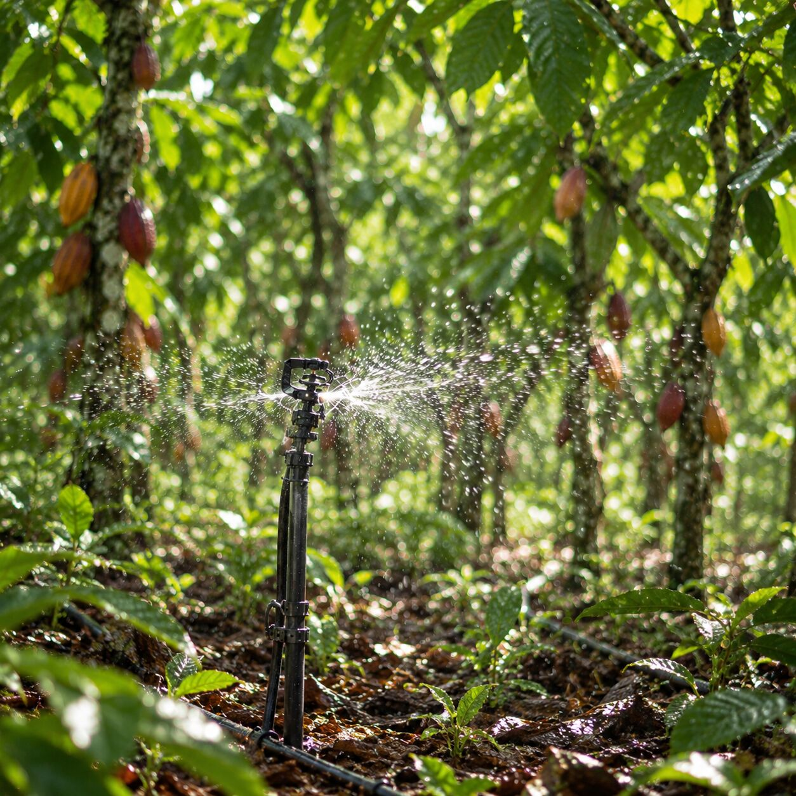

Cocoa
Water for cocoa in the dry season
Where the dry season lasts for months, cocoa trees barely flower. The solar pump irrigates when the soil needs it, with no diesel and no wait for the grid.

The tech sheets in your inbox
Solar irrigation and the solar cold room: components, reference systems and warranties, as PDFs.
- Components
- Reference systems
- Warranties
- Delivery
Or send us a message directly by e-mail, info@agrotechdaholanda.com.br, or on Instagram, @agrotech_da_holanda.
Why water
In the dry season, cocoa stops flowering
In most cocoa regions, water runs short for months on end. In Medicilândia (Pará), Brazil's largest cocoa municipality, the dry season runs from June to November.
- Months of drought every yearOn the Transamazônica, the mean water deficit in the dry season is 275 mm (Morais, 1998).
- Fewer flowers, fewer podsIn the dry season, cocoa flowering is extremely reduced (Embrapa, 2006).
- Almost nobody irrigatesIn 2017, in Medicilândia, only 20 of 3,457 farms irrigated (IBGE, Agricultural Census).
In numbers
Irrigating cocoa, in four numbers
- 1,500 kg/hawith irrigation, against 600 kg/ha without (trial in Bahia, UFRB 2020)
- 31.5 litresper mature cocoa tree, per day, in the dry season (CEPLAC)
- 1 to 10 hareference systems; up to 30 ha per pump
- 15 yearspanel warranty
Smart solar irrigation
Water at the right time, powered by the sun
The system delivers the water by drip or micro-sprinkler and starts the pump when the soil needs it.
- No dieselThe pump runs on the sun, with no fuel and no wait for the grid.
- Led by the soilIn the complete systems, sensors measure moisture and irrigation follows the soil, not the calendar.
- In agroforestry tooIn Tomé-Açu, Embrapa already records irrigated açaí grown together with cocoa.

Micro-sprinklers
Micro-sprinklers for cocoa trees
For trees, such as cocoa in agroforestry, we recommend micro-sprinklers. Dutch Flow Technology supplies the full installation, ready to connect to the solar pump.
- Pipescarry the water from the pump to each tree
- Solenoid valvesopen and close each zone
- Sand filterholds back dirt before the nozzles
- Micro-sprinklerswet the root zone under the canopy
Soil-moisture sensors control the irrigation.
Specifications depend on each project and are discussed on request.
What about cooling?
Dried cocoa beans do not need cooling
Dried beans are stored in a ventilated warehouse (CEPLAC). Cooling comes later, for chocolate, cocoa honey and pulp, and each needs its own temperature range.
- Organic kept apartFor organic produce, the rules require separate, labelled storage (MAPA Ordinance 52/2021).
- Cooling for chocolateThe container works from −5 °C to +18 °C. With the optional humidity control it also covers the 12 to 18 °C band for chocolate and cocoa beans. For pulp, tell us in the proposal and we will look at your case.
On Combu Island, chocolate makers told us they keep their own cooling for certified chocolate.
Water for the farm that already exists, never to clear forest
From 30 December 2026, anyone selling cocoa to the European Union must show there was no deforestation after 2020 (EUDR). According to Embrapa, 96% of Pará's cocoa area was already open before 2020. Irrigating that land raises output without clearing forest.
Growing açaí too?
On upland açaí, dry-season irrigation protects the harvest and moves fruit into the off-season.
Detailed proposal
Tell us where your cocoa farm is.
With the location and a map of the area, we work out the water, the pump and the panels. We reply with a detailed proposal, with no commitment. The first pilot is offered at cost price.
Or send us a message directly by e-mail, info@agrotechdaholanda.com.br, or on Instagram, @agrotech_da_holanda.
Frequently asked questions
Is irrigating cocoa in Pará worth it?
On the Transamazônica, the dry season runs from June to November with a mean water deficit of 275 mm, and in the dry season cocoa flowering is extremely reduced. In Bahia, irrigated cocoa reached 1,500 kg/ha against 600 kg/ha rainfed, in a study cited by UFRB (2020). No trial has been published for Pará yet, so we treat that figure as a reference, not a promise. The calculator shows the energy saved and the harvest gain at the price you enter.
Can the solar cold room store dried cocoa beans?
Dried beans do not need cooling: they keep in a ventilated warehouse for up to 90 days (CEPLAC and MAPA). For organic produce, the rules require separate, labelled storage (MAPA Ordinance 52/2021). The container works from −5 °C to +18 °C. With the optional humidity control it also covers the 12 to 18 °C band for chocolate and cocoa beans. If you make cocoa honey or pulp, tell us in the proposal and we will look at your case.
Sources
- IBGE, Municipal Agricultural Production 2025 (cocoa output, area and yield).
- IBGE, Agricultural Census 2017 (family farms and irrigation by municipality).
- Morais, F. I. O., Revista Brasileira de Ciência do Solo, 1998 (Medicilândia climate).
- Embrapa, Nangoi, Luiz and Sentelhas, 2006 (flowering in the dry season).
- Silva, G. S., UFRB thesis, 2020, citing Siqueira 2018 and Leite 2013, CEPLAC (irrigated cocoa and water use).
- CEPLAC and MAPA, Melhoria da qualidade do cacau, 2011 (bean storage).
- MAPA Ordinance 52/2021, art. 9 (organic produce).
- European Commission, IP/26/941, 2026, and JRC, 2025 (EUDR).
- Embrapa, mapping of cocoa production in the Amazon, 2026.
Reels
Follow us on Instagram
In short videos, we show how solar irrigation and the solar cold room work.
@agrotech_da_holanda (opens Instagram)